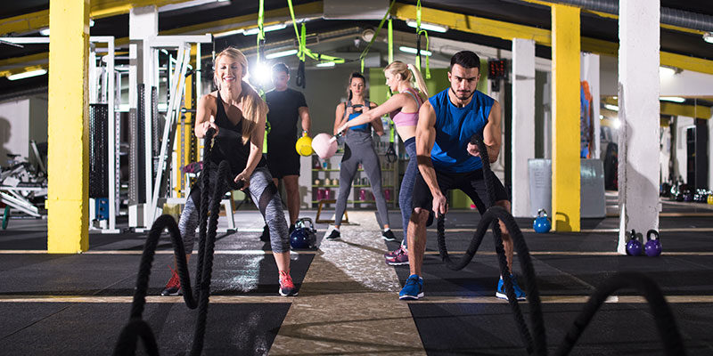

<!DOCTYPE html>
<meta http-equiv="content-type" content="text/html;charset=UTF-8" />
<head>
    <title>Impins la piet cu bara | HealthyZ</title>
    <meta property="og:site_name" content="Strength Coach Glasgow" />
    <meta http-equiv='cache-control' content='no-cache' />
    <meta http-equiv="Content-Type" content="text/html; charset=utf-8" />
    <meta name="viewport" content="width=device-width, initial-scale=1.0" />
    <link id="wsite-base-style" rel="stylesheet" type="text/css" href="../../cdn2.editmysite.com/css/sites9be7.css?buildTime=1561486651" />
    <link rel="stylesheet" type="text/css" href="../files/main_stylef74e.css?1561485939" title="wsite-theme-css" />
    <link href='http://fonts.googleapis.com/css?family=Montserrat:400,700&amp;subset=latin,latin-ext' rel='stylesheet' type='text/css' />
</head>
<body class="header-page  wsite-page-blog wsite-blog-post  full-width-body-off header-overlay-on alt-nav-on  wsite-theme-light">
    <div class="wrapper">

        <div class="banner-wrap">
            <div class="wsite-elements wsite-not-footer wsite-header-elements">
                <div class="wsite-section-wrap">
                    <div class="wsite-section wsite-header-section wsite-section-bg-image wsite-section-effect-parallax" style="height: auto;background-image: url(_/uploads/1/2/3/3/123320581/background-images/1565318044.html);background-repeat: no-repeat ;background-position: 50% 50% ;background-size: 100% ;background-color: transparent ;background-size: cover;background-attachment: fixed;">
                        <div class="wsite-section-content">
                            <div class="container">
                                <div class="banner">
                                    <div class="wsite-section-elements">
                                        <div class="wsite-spacer" style="height:50px;"></div>

                                        <h2 class="wsite-content-title">Antrenamente | Nutritie</h2>

                                        <div class="wsite-spacer" style="height:50px;"></div>
                                    </div>
                                </div>
                            </div>

                        </div>
                        <div class=""></div>
                    </div>
                </div>

            </div>

        </div>

        <div class="main-wrap">
            <div class="wsite-section-content">
                <div class="container">
                    <div class="wsite-elements wsite-not-footer">
                        <table id="blogTable" class="wsite-not-footer" style="border: 0; width: 100%; table-layout: fixed">
                            <tr>
                                <td valign="top">
                                    <div id="815468006538632597-blog" class="blog-body" style="float: left;">
                                        <div id="wsite-content">
                                            <div id="blog-post-205195184828542372" class="blog-post">

                                                <div class="blog-header">
                                                    <h2 class="blog-title">
					<a class="blog-title-link blog-lin">Stil de viata si echilibru</a>

			</h2>
                                                    <p class="blog-date">
                                                        <span class="date-text">
		2/25/2019
	</span>

                                                    </p>
                                                    <p class="blog-comments">

                                                    </p>
                                                </div>

                                                <div class="blog-separator">&nbsp;</div>

                                                <div class="blog-content">
                                                    <div>
                                                        <div class="wsite-image wsite-image-border-none " style="padding-top:10px;padding-bottom:10px;margin-left:0px;margin-right:0px;text-align:center">
                                                            <a>  </a>
                                                            <div style="display:block;font-size:90%"></div>
                                                        </div>
                                                    </div>
                                                    <div class="paragraph">
                                                        10 sfaturi pentru o alimentatie sanatoasa si echilibrata<br><br>
Unul dintre factorii care atârnă cel mai greu în ecuaţia sănătăţii este alimentaţia. Alimentele pe care le consumi nu influenţează doar sănătatea fizică ci şi starea de spirit.<br><br>

Alimentaţia este un indicator al unui stil de viaţă sănătos<br><br>

Urmeaza aceste sfaturi esențiale pentru o nutriție echilibrată și sănătoasă:<br><br>

1. Alege carbohidrați buni<br>
Alegeți bogăția naturală și puterea nutritivă a cerealelor integrale. Ele vă aduc energie și vă mențin silueta.<br><br>

Surse de carbohidrați buni:<br><br>

– Pâinea și produsele din cereale integrale<br>
– Leguminoasele – optează pentru fasolea albă, neagră sau pestrită, mazăre sau linte, astfel vei beneficia de o mulțime de fibre, vitamine și minerale, precum și de proteine de cea mai bună calitate;<br>
– Fructele proaspete<br>
– Legumele (toate tipurile)<br>
– Orezul brun<br>
– Orzul<br><br>

Carbohidrați care ar trebui evitați:<br><br>

– Cerealele rafinate<br>
– Pâinea albă<br>
– Produsele de patiserie<br>
– Biscuiții<br>
– Băuturile acidulate<br>
– Pastele din făină albă<br>
– Orezul alb<br><br>

02. Acordă atenție proteinelor<br>
Peștele, păsările de curte, nucile și fasolea sunt cele mai bune alegeri.<br><br>

03. Alege alimente cu grăsimi sănătoase, evită grăsimile trans și grăsimile saturate<br>
Grăsimile bune sunt grăsimile nesaturate (polinesaturate și mononesaturate). Ele se găsesc predominant în uleiurile vegetale (uleiul de cocos, uleiul din semințe de in, uleiul de avocado, uleiul de rapiță, uleiul de măsline), în peștele gras, în nuci și în semințele oleaginoase.<br><br>

Grăsimile trans sunt grăsimi artificiale prezente în multe mâncăruri pe care le consumăm aproape zilnic. Aceste grăsimi sunt folosite de producătorii de alimente procesate pe scară largă deoarece ajută la prelungirea termenului de garanție și intensifică aroma și textura produselor.<br><br>

Alimente în care se găsesc grăsimi trans (hidrogenate sau parțial hidrogenate):<br>
– frișca și smântâna vegetală<br>
– Biscuiți, prăjituri, torturi, plăcinte, pateuri sau alte produse de patiserie<br>
– Anumite tipuri de margarină<br>
– Produse semi-preparate congelate<br>
– Amestecuri de prăjituri, plăcinte și ciocolată instant<br>
– Alimente prăjite – cartofi prăjiți, gogoși<br>
– Aluaturi, foietaje și pizza congelate<br>
– Fast food și alte produse prăjite<br><br>

04. Optează pentru o dietă cu fibre, bogate în cereale integrale, legume și fructe<br>
Consumă în special fasole boabe și fasole păstăi verde sau galbenă și mazăre, linte, morcovi, spanac, ardei și fructe proaspete.<br><br>

05. Mănâncă mai multe fructe și legume <br>
Alege culori cât mai intense și variate (verde închis, galben, portocaliu și roșu) și consumă-le în mare proporție crude.<br><br>

06. Calciul este important<br>
Lactatele nu sunt singurele sau cea mai bună alegere pentru a vă asigura doza de calciu necesară. Verdețurile, legumele și fructele conțin, de asemenea calciu.<br>
Cele mai bune surse de calciu:<br>
– Fasolea albă<br>
– Legumele cu frunze verzi (spanacul, broccoli, napul, varza chinezească sau rubarba)<br>
– Mazărea<br>
– Semințele de susan<br>
– Migdale<br>
– Somonul și sardinele la conservă<br>
– Brocoli<br>
– Avocado<br>
– Fructe uscate (smochinele, prunele sau caisele uscate)<br>
– Ierburile uscate (cimbru, mărar, busuioc, oregano, salvie, rozmarin)<br><br>

07. Nu uita să te hidratezi<br>
Apa este cea mai bună pentru a potolii setea. Evitați să consumați băuturi cu un conținut mare de zahăr.<br><br>

08. Încearcă să consumi mai puțină sare<br>
Cea mai mare parte din aportul nostru de sare provine din alimentele procesate, mai degrabă decât din adaosul de sare în timpul gătitului sau la masă, deci verificați întotdeauna etichetele produselor alimentare pentru conținutul de sare. Alege mai multe alimente proaspete și mai puține alimente procesate.<br><br>

09. Consumul moderat de alcool poate fi sănătos – dar nu pentru toată lumea!<br>
Studiile efectelor alcoolului asupra corpului uman sunt foarte numeroase, iar rezultatele sunt în consens. Cel mai important este să știm să delimităm până unde merg beneficiile și unde intervin riscurile.<br><br>

10. Asigură-ți doza zilnică de vitamina D<br>
Vitamina D este extrem de importantă pentru absorbția si fixarea calciului și fosforului în organism. Cercetările au arătat că vitamina D, pe lângă numeroase beneficii pentru sistemul osos poate aduce beneficii însemnate sistemului imunitar și ajută la menținerea greutății normale a organismului.<br><br>

Sunt foarte puține alimente care conțin vitamina D, de aceea se recomandă pentru sintetizarea acesteia, expunerea la soare pentru perioade scurte sau suplimente alimentare.<br><br>

Dintre alimentele bogate atât în vitamina D3, cât și în vitamina D2 (ergocalciferol), sunt importante de menționat peștele gras (în special somonul, tonul și macroul), uleiul din ficat de pește, ciupercile, ficatul de vită și gălbenușul de ou.<br><br></div>
                                                    <div class="paragraph"><u><em>Exercitiu recomandat pentru:<br /></em></u>Incepatori: &#10004;&#65039;
                                                        <br />Avansati: &#10004;&#65039;
                                                        <br />&nbsp;
                                                        <br /><u><em>Sfaturi!<br /></em></u>
                                                        <ul>
                                                            <li>In primul rand trebuie sa realizezi o incalzire generala de 10-15 min, iar mai apoi sa reazlizezi o incalzire specifica, pentru fiecare grupa folosita, intre 10-15 min.</li>
                                                            <li>Incepe cu greutati mici la inceput, ca mai apoi sa cresti treptat greutatea.</li>
                                                            <li>Mereu fii concentrat si focusat pe ceea ce ai de facut la sala, lasand la intrare toate probleme si frustrarile, deoarece acestea iti vor diminua antrenamentul</li>
                                                            <li>Mereu cand nu esti sigur de un anumit exercitiu, intreaba un membru din cardul salii, sunt sigur ca te va ajuta.</li>
                                                            <li>Nu te lasa intimidat de ceilalti.</li>
                                                        </ul>
                                                    </div>
                                                    <div class="wsite-youtube" style="margin-bottom:10px;margin-top:10px;">
                                                        <div class="wsite-youtube-wrapper wsite-youtube-size-auto wsite-youtube-align-center">
                                                            <div class="wsite-youtube-container">
                                                                <iframe width="560" height="315" src="https://www.youtube.com/embed/65KDZLu4klU" frameborder="0" allow="accelerometer; autoplay; encrypted-media; gyroscope; picture-in-picture" allowfullscreen></iframe>
                                                                <br>
                                                                <br>
                                                                <iframe width="560" height="315" src="https://www.youtube.com/embed/EhMdChazw6Q" frameborder="0" allow="accelerometer; autoplay; encrypted-media; gyroscope; picture-in-picture" allowfullscreen></iframe>
                                                                <br>
                                                                <br>
                                                            </div>
                                                        </div>
                                                    </div>
                                                    <div class="paragraph">Mai sus am atasat cateva video-uri explicative.
                                                        <br>
                                                    </div>
                                                    <h2 class="wsite-content-title" style="text-align:center;">Doresti mai multe informatii sau ajutor?</h2>
                                                    <div>
                                                        <div class="wsite-multicol">
                                                            <div class="wsite-multicol-table-wrap" style="margin:0 -15px;">
                                                                <table class="wsite-multicol-table">
                                                                    <tbody class="wsite-multicol-tbody">
                                                                        <tr class="wsite-multicol-tr">
                                                                            <td class="wsite-multicol-col" style="width:42.134831460674%; padding:0 15px;">
                                                                                <div>
                                                                                    <div class="wsite-image wsite-image-border-none " style="padding-top:10px;padding-bottom:10px;margin-left:0px;margin-right:0px;text-align:center"> 
                                                                                        <div style="display:block;font-size:90%"></div>
                                                                                    </div>
                                                                                </div>
                                                                            </td>
                                                                            <td class="wsite-multicol-col" style="width:57.865168539326%; padding:0 15px;">
                                                                                <div class="paragraph"><strong style="color:rgb(42, 42, 42)">Cu ce te putem ajuta?</strong>
                                                                                    <ol style="color:rgb(42, 42, 42)">
                                                                                        <li>Poti beneficia de un antrenor personal</li>
                                                                                        <li>Program nutritional customizat pentru tine</li>
                                                                                        <li>Sfaturi si participari la diferite dezbateri din cadrul sportului</li>
                                                                                        <li>Poti devenii un afiliat / partener</li>
                                                                                    </ol>
                                                                                </div>
                                                                            </td>
                                                                        </tr>
                                                                    </tbody>
                                                                </table>
                                                            </div>
                                                        </div>
                                                    </div>
                                                    <div class="paragraph"><span style="color:rgb(42, 42, 42)">Daca esti client nou, poti beneficia de diferite reduceri, la programe de antrenament si nutritionale, sau aducand un nou membru, poti castiga diferite produse promotionale.</span><span style="color:rgb(42, 42, 42)">&#8203;&#8203;</span></div>
                                                    <div style="text-align:center;">
                                                        <div style="height: 10px; overflow: hidden;"></div>
                                                        <div style="height: 10px; overflow: hidden;"></div>
                                                    </div>

                                                </div>

                                                <div class="blog-comments-bottom">

                                                </div>

                                                <div class="blog-post-separator"></div>
                                            </div>

                                            <a name="comments" id="comments"></a>
                                            <div id="commentArea">
                                                <div class="blog-comment-area">

                                                    <div id="commentText">
                                                        <!-- lastComment -->
                                                        <div id="lastComment"> </div>
                                                    </div>
                                                    <br />
                                                    <div class="blog-notice-comments-closed">Comments are closed.</div>

                                                </div>

                                            </div>

                                        </div>
                                    </div>

                                </td>

                            </tr>
                        </table>

                    </div>
                </div>
            </div>
        </div>

        <div class="footer-wrap">
            <div class="footer">
                <div class='wsite-elements wsite-footer'>
                    <div>
                        <div class="wsite-multicol">
                            <div class="wsite-multicol-table-wrap" style="margin:0 -25px;">
                                <table class="wsite-multicol-table">
                                    <tbody class="wsite-multicol-tbody">
                                        <tr class="wsite-multicol-tr">
                                            <td class="wsite-multicol-col" style="width:50.21765051138%; padding:0 25px;">

                                                <div>
                                                    <div class="wsite-multicol">
                                                        <div class="wsite-multicol-table-wrap" style="margin:0 -15px;">

                                                        </div>

                                                        <div>
                                                            <div style="height: 20px; overflow: hidden; width: 100%;"></div>
                                                            <hr class="styled-hr" style="width:100%;"></hr>
                                                            <div style="height: 20px; overflow: hidden; width: 100%;"></div>
                                                        </div>

                                                        <div>
                                                            <div class="wsite-multicol">
                                                                <div class="wsite-multicol-table-wrap" style="margin:0 -15px;">
                                                                    <table class="wsite-multicol-table">
                                                                        <tbody class="wsite-multicol-tbody">
                                                                            <tr class="wsite-multicol-tr">
                                                                                <td class="wsite-multicol-col" style="width:50%; padding:0 15px;">

                                                                                    <div class="paragraph" style="text-align:left;"><font size="1">&copy; COPYRIGHT 2019. ALL RIGHTS RESERVED.</font></div>

                                                                                </td>
                                                                                <td class="wsite-multicol-col" style="width:50%; padding:0 15px;">

                                                                                    <div>
                                                                                        <div id="912742856326153445" align="right" style="width: 100%; overflow-y: hidden;" class="wcustomhtml">Website Design by <a href="#" rel="nofollow">FreakZ</a></div>
                                                                                    </div>
                                                                                </td>
                                                                            </tr>
                                                                        </tbody>
                                                                    </table>
                                                                </div>
                                                            </div>
                                                        </div>
                                                    </div>
                                                </div>
                            </div>
                        </div>
</body>

</html>